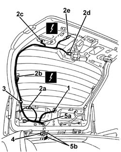
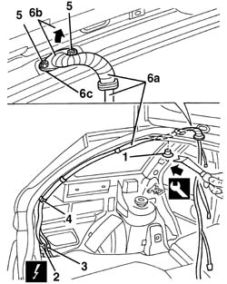

7095B66 TAILGATE LEFT integrated WIRING - R.R.
- Path
- Procedures > 70 FITTINGS > 7095 MISCELLANEOUS BODYWORK > 7095B interventions on mechnical parts > 7095B66 TAILGATE LEFT integrated WIRING - R.R.
- Kind
- repair procedure (removal / refitting; the operation number is the code)
- Applies to
- all engines; all production periods
- Interactive page
- https://sloeber94.github.io/elrnDB-a156/en/#/3239003
Applies to: all engines; all production periods; only with equipment: Station Wagon
 Removing
Removing
 Refitting
Refitting7040G36 BULB HOLDER FOR LOAD CARRYING COMPARTMENT lighting on tailgate - R.R.
7015A05 tail-gate lower interior panel-r r
7015A06 tail-gate upper interior panel-r r
7040B22 luggage compartment/load platform moulding - r+r
7040B15 (One), rear side trim mounting BRACKET left or right - R.R .
7040B28 PET transport PROTECTION and load carrying compartment COVER COMBINATION BLIND - R.R.
- 7040L44 rear compartment scuff strip - r r
7050A47 SIDE PANEL (one) for rear seat BACKREST., left or right - R.R .
7040B30 l/h or r/h side support (one) for load platform cover blind - arrange
7040H42 rear pillar trim - r r
7040H12 Roof panel REAR TRIM - R.R.
- 7040B23 back upper side trim (1), lh or rh - r r
7040B06 side trim (one) lh or rh, load compartment/load platform - r r
1. Disconnect the pipe from the windscreen washer jet.
2. Disconnect the electrical connections (2a, 2b, 2c, 2d, 2e).
 | Name | Connector |
|---|---|---|
2a | Additional ("third brake light") |
| Name | Connector |
|---|---|---|
2b | Heated rear windscreen |
| Name | Connector |
|---|---|---|
2c | Left rear. light cluster on (moving section of boot) |
| Name | Connector |
|---|---|---|
2d | Rear window wiper motor |
| Name | Connector |
|---|---|---|
2e | Boot opening switch |
3. Release the wiring retainers.
4. Prise up the top end of the cable gaiter.
5. Withdraw the wiring assembly (5a) from the tail-gate by taking out of opening (5b).

Applies to: all engines; all production periods; only with equipment: Station Wagon
1. Undo the roof panel trim retaining studs using the appropriate tool.
 | Name | Country |
|---|---|---|
1 | Scraper blade | 1.823.015.000 |
2. Disconnect the electrical connections.
| Name | Connector |
|---|---|---|
2 | Left tailgate / rear coupling |
3. Disconnect the rear washer pipe connection.
4. Release the tail-gate wiring retainers.
5. Undo the wiring duct bolts.
6. Withdraw wiring (6a) from the car by pulling in the arrowed direction through opening (6b). Recover seal (6c).

Applies to: all engines; all production periods; only with equipment: Station Wagon
Refitting
RemovingCheck that the wiring is undamaged and that the individual wires are firmly attached to the connections.
Check that the connections are fitted with the anti-slip devices (secondary lock).
If necessary, check the continuity.
Refit the left tail-gate wiring
Position the wiring duct seal and tighten the bolts.
Fit the upper end of the wiring duct gaiter.
Connect the electrical connections and left-hand tail-gate wiring retainers.
Connect the rear washer pipe connection.
Connect the pipe to the windscreen washer jet.
Do up the roof panel trim retaining studs.
7040B06 side trim (one) lh or rh, load compartment/load platform - r r
- 7040B23 back upper side trim (1), lh or rh - r r
7040H12 Roof panel REAR TRIM - R.R.
7040H42 rear pillar trim - r r
7040B30 l/h or r/h side support (one) for load platform cover blind - arrange
7050A47 SIDE PANEL (one) for rear seat BACKREST., left or right - R.R .
- 7040L44 rear compartment scuff strip - r r
7040B28 PET transport PROTECTION and load carrying compartment COVER COMBINATION BLIND - R.R.
7040B15 (One), rear side trim mounting BRACKET left or right - R.R .
7040B22 luggage compartment/load platform moulding - r+r
7015A06 tail-gate upper interior panel-r r
7015A05 tail-gate lower interior panel-r r
7040G36 BULB HOLDER FOR LOAD CARRYING COMPARTMENT lighting on tailgate - R.R.
Topics linked from this page (17)
- 7015A05 tail-gate lower interior panel-r r
- 7015A06 tail-gate upper interior panel-r r
- 7040B06 side trim (one) lh or rh, load compartment/load platform - r r
- 7040B15 (One), rear side trim mounting BRACKET left or right - R.R .
- 7040B22 luggage compartment/load platform moulding - r+r
- 7040B28 PET transport PROTECTION and load carrying compartment COVER COMBINATION BLIND - R.R.
- 7040B30 l/h or r/h side support (one) for load platform cover blind - arrange
- 7040G36 BULB HOLDER FOR LOAD CARRYING COMPARTMENT lighting on tailgate - R.R.
- 7040H12 Roof panel REAR TRIM - R.R.
- 7040H42 rear pillar trim - r r
- 7050A47 SIDE PANEL (one) for rear seat BACKREST., left or right - R.R .
- D87 Left tailgate / rear coupling
- F35 Left rear. light cluster on (moving section of boot)
- F40 Additional ("third brake light")
- I11 Boot opening switch ( LEFT TAILGATE )
- N16 Rear window wiper motor
- P55B Heated rear windscreen ( LEFT TAILGATE )